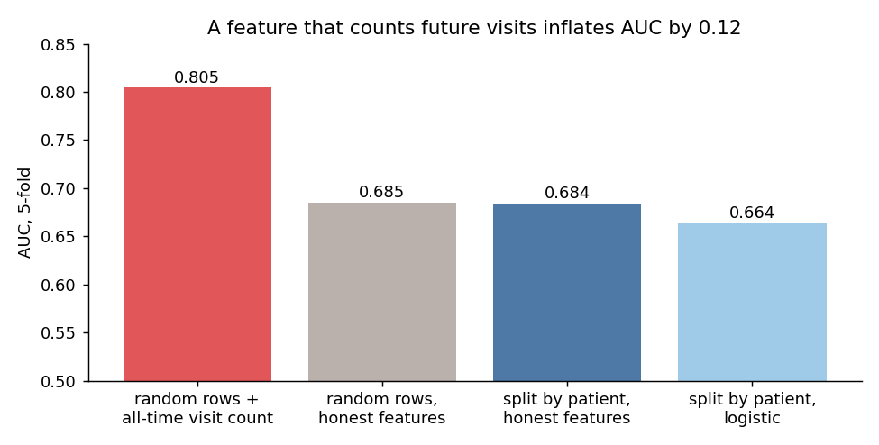
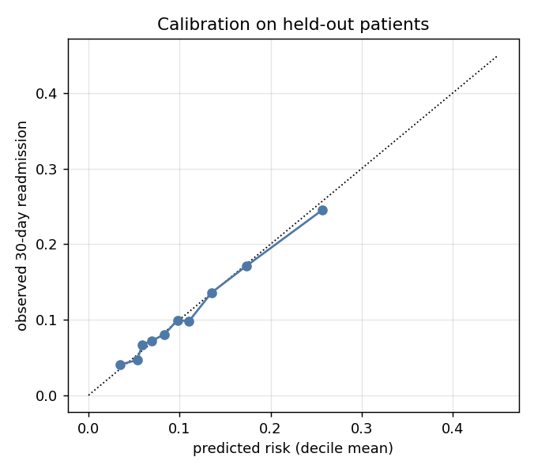
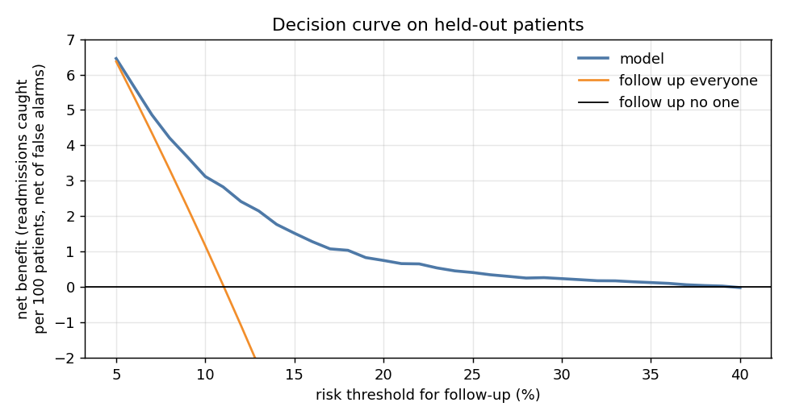
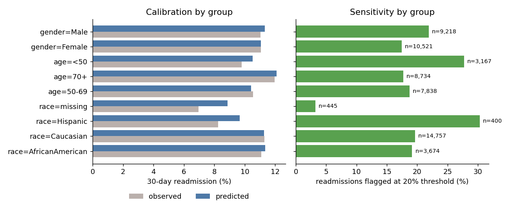

99,340 real encounters of diabetic patients in 130 US hospitals, 11.4% readmitted within 30 days. Making the model look good is easy: one leaky feature lifts AUC to 0.80. Making it useful means honest validation, calibrated risks, a net benefit at realistic thresholds, and checking who it fails.



